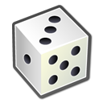
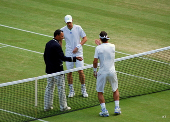
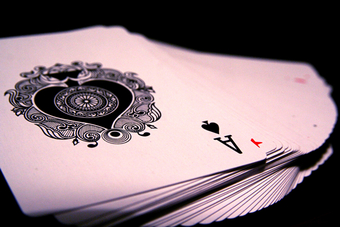
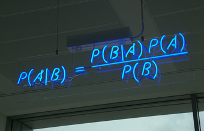
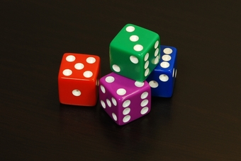
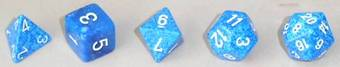

Table of Contents
8. Probability
8.1. What Are the Chances?
8.1.1. Fundamentals of Probability
8.1.2. Conditional Probability
8.1.3. Unions and Intersections
8.1.4. Complementary Events
8.3. Probability Rules
8.3.1. The Addition Rule
8.3.2. The Multiplication Rule
8.3.3. Independence
8.3.4. Counting Rules and Techniques
8.3.5. Bayes' Rule
8.3.6. The Collins Case
8.3. More About Chance
8.3.1. The Paradox of the Chevalier De Méré
8.3.2. Are Real Dice Fair?
8. Probability
8.1. What Are the Chances?
8.1.1. Fundamentals of Probability
Probability is the branch of mathematics that deals with the likelihood that certain outcomes will occur. There are five basic rules, or axioms, that one must understand while studying the fundamentals of probability.
Learning Objective
Explain the most basic and most important rules in determining the probability of an event
Key Points
- Probability is a number that can be assigned to outcomes and events. It always is greater than or equal to zero, and less than or equal to one.
- The sum of the probabilities of all outcomes must equal $1$ .
- If two events have no outcomes in common, the probability that one or the other occurs is the sum of their individual probabilities.
- The probability that an event does not occur is $1$ minus the probability that the event does occur.
- Two events $A$ and $B$ are independent if knowing that one occurs does not change the probability that the other occurs.
Key Terms
- experiment
- Something that is done that produces measurable results, called outcomes.
- outcome
- One of the individual results that can occur in an experiment.
- event
- A subset of the sample space.
- sample space
- The set of all outcomes of an experiment.
In discrete probability, we assume a well-defined experiment, such as flipping a coin or rolling a die. Each individual result which could occur is called an outcome. The set of all outcomes is called the sample space, and any subset of the sample space is called an event.
For example, consider the experiment of flipping a coin two times. There are four individual outcomes, namely $HH, HT, TH, TT.$ The sample space is thus $\{HH, HT, TH, TT\}.$ The event "at least one heads occurs" would be the set $\{HH, HT, TH\}.$ If the coin were a normal coin, we would assign the probability of $1/4$ to each outcome.
In probability theory, the probability $P$ of some event $E$ , denoted $P(E)$ , is usually defined in such a way that $P$ satisfies a number of axioms, or rules. The most basic and most important rules are listed below.
Probability Rules
- Probability is a number. It is always greater than or equal to zero, and less than or equal to one. This can be written as $0 \leq P(A) \leq 1$ . An impossible event, or an event that never occurs, has a probability of $0$ . An event that always occurs has a probability of $1$ . An event with a probability of $0.5$ will occur half of the time.
- The sum of the probabilities of all possibilities must equal $1$ . Some outcome must occur on every trial, and the sum of all probabilities is 100%, or in this case, $1$ . This can be written as $P(S) = 1$ , where $S$ represents the entire sample space.
- If two events have no outcomes in common, the probability that one or the other occurs is the sum of their individual probabilities. If one event occurs in $30\%$ of the trials, a different event occurs in $20\%$ of the trials, and the two cannot occur together (if they are disjoint), then the probability that one or the other occurs is $30\% + 20\% = 50\%$ . This is sometimes referred to as the addition rule, and can be simplified with the following: $P(A \ \text{or} \ B) = P(A)+P(B)$ . The word "or" means the same thing in mathematics as the union, which uses the following symbol: $\cup $ . Thus when $A$ and $B$ are disjoint, we have $P(A \cup B) = P(A)+P(B)$ .
- The probability that an event does not occur is $1$ minus the probability that the event does occur. If an event occurs in $60\%$ of all trials, it fails to occur in the other $40\%$ , because $100\% - 60\% = 40\%$ . The probability that an event occurs and the probability that it does not occur always add up to $100\%$ , or $1$ . These events are called complementary events, and this rule is sometimes called the complement rule. It can be simplified with $P(A^c) = 1-P(A)$ , where $A^c$ is the complement of $A$ .
- Two events $A$ and $B$ are independent if knowing that one occurs does not change the probability that the other occurs. This is often called the multiplication rule. If $A$ and $B$ are independent, then $P(A \ \text{and} \ B) = P(A)P(B)$ . The word "and" in mathematics means the same thing in mathematics as the intersection, which uses the following symbol: $\cap$ . Therefore when A and B are independent, we have $P(A \cap B) = P(A)P(B).$
Extension of the Example
Elaborating on our example above of flipping two coins, assign the probability $1/4$ to each of the $4$ outcomes. We consider each of the five rules above in the context of this example.
1. Note that each probability is $1/4$ , which is between $0$ and $1$ .
2. Note that the sum of all the probabilities is $1$ , since $\frac{1}{4}+\frac{1}{4}+\frac{1}{4}+\frac{1}{4}=1 $ .
3. Suppose $A$ is the event exactly one head occurs, and $B$ is the event exactly two tails occur. Then $A=\{HT,TH\}$ and $B=\{TT\}$ are disjoint. Also, $P(A \cup B) = \frac{3}{4} = \frac{2}{4}+\frac{1}{4}=P(A) + P(B).$
4. The probability that no heads occurs is $1/4$ , which is equal to $1-3/4$ . So if $A=\{HT, TH, HH\}$ is the event that a head occurs, we have $P(A^c)=\frac{1}{4}=1 - \frac{3}{4}=1-P(A).$
5. If $A$ is the event that the first flip is a heads and $B$ is the event that the second flip is a heads, then $A$ and $B$ are independent. We have $A=\{HT,HH\}$ and $B=\{TH,HH\}$ and $A \cap B = \{HH\}.$ Note that $P(A \cap B) = \frac{1}{4} =\frac{1}{2}\cdot \frac{1}{2} = P(A)P(B).$
{kind=link}
Dice are often used when learning the rules of probability.
8.1.2. Conditional Probability
The conditional probability of an event is the probability that an event will occur given that another event has occurred.
Learning Objective
Explain the significance of Bayes' theorem in manipulating conditional probabilities
Key Points
- The conditional probability $P(B \vert A)$ of an event $B$ , given an event $A$ , is defined by: $P(B|A)=\frac{P(A\cap B)}{P(A)}$ , when $P(A) > 0$ .
- If the knowledge that event $A$ occurs does not change the probability that event $B$ occurs, then $A$ and $B$ are independent events, and thus, $P(B|A) = P(B)$ .
- Mathematically, Bayes' theorem gives the relationship between the probabilities of $A$ and $B$ , $P(A)$ and $P(B)$ , and the conditional probabilities of $A$ given $B$ and $B$ given $A$ , $P(A|B)$ and $P(B|A)$ . In its most common form, it is: $P(A|B)=\frac{P(B|A)P(A)}{P(B)}$ .
Key Terms
- conditional probability
- The probability that an event will take place given the restrictive assumption that another event has taken place, or that a combination of other events has taken place
- independent
- Not dependent; not contingent or depending on something else; free.
Probability of $B$ Given That $A$ Has Occurred
Our estimation of the likelihood of an event can change if we know that some other event has occurred. For example, the probability that a rolled die shows a $2$ is $1/6$ without any other information, but if someone looks at the die and tells you that is is an even number, the probability is now $1/3$ that it is a $2$ . The notation $P(B|A)$ indicates a conditional probability, meaning it indicates the probability of one event under the condition that we know another event has happened. The bar "|" can be read as "given", so that $P(B|A)$ is read as "the probability of $B$ given that $A$ has occurred".
The conditional probability $\displaystyle P(B|A)$ of an event $B$ , given an event $A$ , is defined by:
$\displaystyle P(B|A)=\frac{P(A\cap B)}{P(A)}$
When $P(A) > 0$ . Be sure to remember the distinct roles of $B$ and $A$ in this formula. The set after the bar is the one we are assuming has occurred, and its probability occurs in the denominator of the formula.
Example
Suppose that a coin is flipped 3 times giving the sample space:
$S=\{HHH, HHT, HTH, THH, TTH, THT, HTT, TTT\}$
Each individual outcome has probability $1/8$ . Suppose that $B$ is the event that at least one heads occurs and $A$ is the event that all $3$ coins are the same. Then the probability of $B$ given $A$ is $1/2$ , since $A \cap B=\{HHH\}$ which has probability $1/8$ and $A=\{HHH,TTT\}$ which has probability $2/8$ , and $\frac{1/8}{2/8}=\frac{1}{2}.$
Independence
The conditional probability $P(B|A)$ is not always equal to the unconditional probability $P(B)$ . The reason behind this is that the occurrence of event $A$ may provide extra information that can change the probability that event $B$ occurs. If the knowledge that event $A$ occurs does not change the probability that event $B$ occurs, then $A$ and $B$ are independent events, and thus, $P(B|A) = P(B)$ .
Bayes' Theorem
In probability theory and statistics, Bayes' theorem (alternatively Bayes' law or Bayes' rule) is a result that is of importance in the mathematical manipulation of conditional probabilities. It can be derived from the basic axioms of probability.
Mathematically, Bayes' theorem gives the relationship between the probabilities of $A$ and $B$ , $P(A)$ and $P(B)$ , and the conditional probabilities of $A$ given $B$ and $B$ given $A$ . In its most common form, it is:
This may be easier to remember in this alternate symmetric form:
Example:
Suppose someone told you they had a nice conversation with someone on the train. Not knowing anything else about this conversation, the probability that they were speaking to a woman is $50\%$ . Now suppose they also told you that this person had long hair. It is now more likely they were speaking to a woman, since women in in this city are more likely to have long hair than men. Bayes's theorem can be used to calculate the probability that the person is a woman.
To see how this is done, let $W$ represent the event that the conversation was held with a woman, and $L$ denote the event that the conversation was held with a long-haired person. It can be assumed that women constitute half the population for this example. So, not knowing anything else, the probability that $W$ occurs is $P(W) = 0.5$ .
Suppose it is also known that $75\%$ of women in this city have long hair, which we denote as $P(L|W) = 0.75$ . Likewise, suppose it is known that $25\%$ of men in this city have long hair, or $P(L|M) = 0.25$ , where $M$ is the complementary event of $W$ , i.e., the event that the conversation was held with a man (assuming that every human is either a man or a woman).
Our goal is to calculate the probability that the conversation was held with a woman, given the fact that the person had long hair, or, in our notation, $P(W|L)$ . Using the formula for Bayes's theorem, we have:
8.1.3. Unions and Intersections
Union and intersection are two key concepts in set theory and probability.
Learning Objective
Give examples of the intersection and the union of two or more sets
Key Points
- The union of two or more sets is the set that contains all the elements of the two or more sets. Union is denoted by the symbol $\cup$ .
- The general probability addition rule for the union of two events states that $P(A\cup B) = P(A)+P(B)-P(A \cap B)$ , where $A \cap B$ is the intersection of the two sets.
- The addition rule can be shortened if the sets are disjoint: $P(A \cup B) = P(A) + P(B)$ . This can even be extended to more sets if they are all disjoint: $P(A \cup B \cup C) = P(A) + P(B) + P(C)$ .
- The intersection of two or more sets is the set of elements that are common to every set. The symbol $\cap$ is used to denote the intersection.
- When events are independent, we can use the multiplication rule for independent events, which states that $P(A \cap B) = P(A)P(B)$ .
Key Terms
- independent
- Not contingent or dependent on something else.
- disjoint
- Having no members in common; having an intersection equal to the empty set.
Introduction
Probability uses the mathematical ideas of sets, as we have seen in the definition of both the sample space of an experiment and in the definition of an event. In order to perform basic probability calculations, we need to review the ideas from set theory related to the set operations of union, intersection, and complement.
Union
The union of two or more sets is the set that contains all the elements of each of the sets; an element is in the union if it belongs to at least one of the sets. The symbol for union is $\cup$ , and is associated with the word "or", because $A \cup B$ is the set of all elements that are in $A$ or $B$ (or both.) To find the union of two sets, list the elements that are in either (or both) sets. In terms of a Venn Diagram, the union of sets $A$ and $B$ can be shown as two completely shaded interlocking circles.

The shaded Venn Diagram shows the union of set $A$ (the circle on left) with set $B$ (the circle on the right). It can be written shorthand as $A \cup B$.
In symbols, since the union of $A$ and $B$ contains all the points that are in $A$ or $B$ or both, the definition of the union is:
For example, if $A = \{1, 3, 5, 7\}$ and $B = \{1, 2, 4, 6\}$ , then $A \cup B = \{1, 2, 3, 4, 5, 6, 7\}$ . Notice that the element $1$ is not listed twice in the union, even though it appears in both sets $A$ and $B$ . This leads us to the general addition rule for the union of two events:
Where $P(A\cap B)$ is the intersection of the two sets. We must subtract this out to avoid double counting of the inclusion of an element.
If sets $A$ and $B$ are disjoint, however, the event $A \cap B$ has no outcomes in it, and is an empty set denoted as $\emptyset$ , which has a probability of zero. So, the above rule can be shortened for disjoint sets only:
This can even be extended to more sets if they are all disjoint:
Intersection
The intersection of two or more sets is the set of elements that are common to each of the sets. An element is in the intersection if it belongs to all of the sets. The symbol for intersection is $\cap$ , and is associated with the word "and", because $A \cap B$ is the set of elements that are in $A$ and $B$ simultaneously. To find the intersection of two (or more) sets, include only those elements that are listed in both (or all) of the sets. In terms of a Venn Diagram, the intersection of two sets $A$ and $B$ can be shown at the shaded region in the middle of two interlocking circles .

Set $A$ is the circle on the left, set $B$ is the circle on the right, and the intersection of $A$ and $B$ , or $A \cap B$ , is the shaded portion in the middle.
In mathematical notation, the intersection of $A$ and $B$ is written as $A \cap B = \{x: x \in A \ \text{and} \ x \in B\}$ . For example, if $A = \{1, 3, 5, 7\}$ and $B = \{1, 2, 4, 6\}$ , then $A \cap B = \{1\}$ because $1$ is the only element that appears in both sets $A$ and $B$ .
When events are independent, meaning that the outcome of one event doesn't affect the outcome of another event, we can use the multiplication rule for independent events, which states:
For example, let's say we were tossing a coin twice, and we want to know the probability of tossing two heads. Since the first toss doesn't affect the second toss, the events are independent. Say is the event that the first toss is a heads and $B$ is the event that the second toss is a heads, then $P(A \cap B) = \frac{1}{2} \cdot \frac{1}{2} = \frac{1}{4}$ .
8.1.4. Complementary Events
The complement of $A$ is the event in which $A$ does not occur.
Learning Objective
Explain an example of a complementary event
Key Points
- The complement of an event $A$ is usually denoted as $A'$ , $A^c$ or $\bar{A}$ .
- An event and its complement are mutually exclusive, meaning that if one of the two events occurs, the other event cannot occur.
- An event and its complement are exhaustive, meaning that both events cover all possibilities.
Key Terms
- exhaustive
- including every possible element
- mutually exclusive
- describing multiple events or states of being such that the occurrence of any one implies the non-occurrence of all the others
What are Complementary Events?
In probability theory, the complement of any event $A$ is the event $[\text{not}\ A]$ , i.e. the event in which $A$ does not occur. The event $A$ and its complement $[\text{not}\ A]$ are mutually exclusive and exhaustive, meaning that if one occurs, the other does not, and that both groups cover all possibilities. Generally, there is only one event $B$ such that $A$ and $B$ are both mutually exclusive and exhaustive; that event is the complement of $A$ . The complement of an event $A$ is usually denoted as $A'$ , $A^c$ or $\bar{A}$ .
Simple Examples
A common example used to demonstrate complementary events is the flip of a coin. Let's say a coin is flipped and one assumes it cannot land on its edge. It can either land on heads or on tails. There are no other possibilities (exhaustive), and both events cannot occur at the same time (mutually exclusive). Because these two events are complementary, we know that $P(\text{heads}) + P(\text{tails}) = 1$ .
{kind=link}
Often in sports games, such as tennis, a coin flip is used to determine who will serve first because heads and tails are complementary events.
Another simple example of complementary events is picking a ball out of a bag. Let's say there are three plastic balls in a bag. One is blue and two are red. Assuming that each ball has an equal chance of being pulled out of the bag, we know that $P(\text{blue}) = \frac{1}{3}$ and $P(\text{red}) = \frac{2}{3}$ . Since we can only either chose blue or red (exhaustive) and we cannot choose both at the same time (mutually exclusive), choosing blue and choosing red are complementary events, and $P(\text{blue}) + P(\text{red}) = 1$ .
Finally, let's examine a non-example of complementary events. If you were asked to choose any number, you might think that that number could either be prime or composite. Clearly, a number cannot be both prime and composite, so that takes care of the mutually exclusive property. However, being prime or being composite are not exhaustive because the number 1 in mathematics is designated as "unique. "
8.2. Probability Rules
8.2.1. The Addition Rule
The addition rule states the probability of two events is the sum of the probability that either will happen minus the probability that both will happen.
Learning Objective
Calculate the probability of an event using the addition rule
Key Points
- The addition rule is: $P(A\cup B)=P(A)+P(B)-P(A\cap B).$
- The last term has been accounted for twice, once in $P(A)$ and once in $P(B)$ , so it must be subtracted once so that it is not double-counted.
- If $A$ and $B$ are disjoint, then $P(A\cap B)=0$ , so the formula becomes $P(A \cup B)=P(A) + P(B).$
Key Term
- probability
- The relative likelihood of an event happening.
Addition Law
The addition law of probability (sometimes referred to as the addition rule or sum rule), states that the probability that $A$ or $B$ will occur is the sum of the probabilities that $A$ will happen and that $B$ will happen, minus the probability that both $A$ and $B$ will happen. The addition rule is summarized by the formula:
Consider the following example. When drawing one card out of a deck of $52$ playing cards, what is the probability of getting heart or a face card (king, queen, or jack)? Let $H$ denote drawing a heart and $F$ denote drawing a face card. Since there are $13$ hearts and a total of $12$ face cards ($3$ of each suit: spades, hearts, diamonds and clubs), but only $3$ face cards of hearts, we obtain:
Using the addition rule, we get:
The reason for subtracting the last term is that otherwise we would be counting the middle section twice (since $H$ and $F$ overlap).
Addition Rule for Disjoint Events
Suppose $A$ and $B$ are disjoint, their intersection is empty. Then the probability of their intersection is zero. In symbols: $P(A \cap B) = 0$ . The addition law then simplifies to:
$P(A \cup B) = P(A) + P(B) \qquad \text{when} \qquad A \cap B = \emptyset$
The symbol $\emptyset$ represents the empty set, which indicates that in this case $A$ and $B$ do not have any elements in common (they do not overlap).
Example:
Suppose a card is drawn from a deck of 52 playing cards: what is the probability of getting a king or a queen? Let $A$ represent the event that a king is drawn and $B$ represent the event that a queen is drawn. These two events are disjoint, since there are no kings that are also queens. Thus:
8.2.2. The Multiplication Rule
The multiplication rule states that the probability that $A$ and $B$ both occur is equal to the probability that $B$ occurs times the conditional probability that $A$ occurs given that $B$ occurs.
Learning Objective
Apply the multiplication rule to calculate the probability of both
Key Points
- The multiplication rule can be written as: $P(A \cap B) = P(B) \cdot P(A|B)$ .
- We obtain the general multiplication rule by multiplying both sides of the definition of conditional probability by the denominator.
Key Term
- sample space
- The set of all possible outcomes of a game, experiment or other situation.
The Multiplication Rule
In probability theory, the Multiplication Rule states that the probability that $A$ and $B$ occur is equal to the probability that $A$ occurs times the conditional probability that $B$ occurs, given that we know $A$ has already occurred. This rule can be written:
Switching the role of $A$ and $B$ , we can also write the rule as:
We obtain the general multiplication rule by multiplying both sides of the definition of conditional probability by the denominator. That is, in the equation $\displaystyle P(A|B)=\frac{P(A\cap B)}{P(B)}$ , if we multiply both sides by $P(B)$ , we obtain the Multiplication Rule.
The rule is useful when we know both $P(B)$ and $P(A|B)$ , or both $P(A)$ and $P(B|A).$
Example
Suppose that we draw two cards out of a deck of cards and let $A$ be the event the the first card is an ace, and $B$ be the event that the second card is an ace, then:
And:
The denominator in the second equation is $51$ since we know a card has already been drawn. Therefore, there are $51$ left in total. We also know the first card was an ace, therefore:
Independent Event
Note that when $A$ and $B$ are independent, we have that $P(B|A)= P(B)$ , so the formula becomes $P(A \cap B)=P(A)P(B)$ , which we encountered in a previous section. As an example, consider the experiment of rolling a die and flipping a coin. The probability that we get a $2$ on the die and a tails on the coin is $\frac{1}{6}\cdot \frac{1}{2} = \frac{1}{12}$ , since the two events are independent.
8.2.3. Independence
To say that two events are independent means that the occurrence of one does not affect the probability of the other.
Learning Objective
Explain the concept of independence in relation to probability theory
Key Points
- Two events are independent if the following are true: $P(A|B) = P(A)$ ,$P(B|A) = P(B)$ , and $P(A \ \text{and} \ B) = P(A) \cdot P(B)$ .
- If any one of these conditions is true, then all of them are true.
- If events $A$ and $B$ are independent, then the chance of $A$ occurring does not affect the chance of $B$ occurring and vice versa.
Key Terms
- independence
- The occurrence of one event does not affect the probability of the occurrence of another.
- probability theory
- The mathematical study of probability (the likelihood of occurrence of random events in order to predict the behavior of defined systems).
Independent Events
In probability theory, to say that two events are independent means that the occurrence of one does not affect the probability that the other will occur. In other words, if events $A$ and $B$ are independent, then the chance of $A$ occurring does not affect the chance of $B$ occurring and vice versa. The concept of independence extends to dealing with collections of more than two events.
Two events are independent if any of the following are true:
- $\displaystyle P(A|B) = P(A)$
- $\displaystyle P(B|A) = P(B)$
- $\displaystyle P(A \ \text{and} \ B) = P(A)\cdot P(B)$
To show that two events are independent, you must show only one of the conditions listed above. If any one of these conditions is true, then all of them are true.
Translating the symbols into words, the first two mathematical statements listed above say that the probability for the event with the condition is the same as the probability for the event without the condition. For independent events, the condition does not change the probability for the event. The third statement says that the probability of both independent events $A$ and $B$ occurring is the same as the probability of $A$ occurring, multiplied by the probability of $B$ occurring.
As an example, imagine you select two cards consecutively from a complete deck of playing cards. The two selections are not independent. The result of the first selection changes the remaining deck and affects the probabilities for the second selection. This is referred to as selecting "without replacement" because the first card has not been replaced into the deck before the second card is selected.
However, suppose you were to select two cards "with replacement" by returning your first card to the deck and shuffling the deck before selecting the second card. Because the deck of cards is complete for both selections, the first selection does not affect the probability of the second selection. When selecting cards with replacement, the selections are independent.
{kind=link}
Selecting two cards from a deck by first selecting one, then replacing it in the deck before selecting a second is an example of independent events.
Consider a fair die role, which provides another example of independent events. If a person roles two die, the outcome of the first roll does not change the probability for the outcome of the second roll.
Example
Two friends are playing billiards, and decide to flip a coin to determine who will play first during each round. For the first two rounds, the coin lands on heads. They decide to play a third round, and flip the coin again. What is the probability that the coin will land on heads again?
First, note that each coin flip is an independent event. The side that a coin lands on does not depend on what occurred previously.
For any coin flip, there is a ${\frac{1}{2}}$ chance that the coin will land on heads. Thus, the probability that the coin will land on heads during the third round is ${\frac{1}{2}}$ .
Example
When flipping a coin, what is the probability of getting tails $5$ times in a row?
Recall that each coin flip is independent, and the probability of getting tails is ${\frac{1}{2}}$ for any flip. Also recall that the following statement holds true for any two independent events A and B:
Finally, the concept of independence extends to collections of more than $2$ events.
Therefore, the probability of getting tails $4$ times in a row is:
8.2.4. Counting Rules and Techniques
Combinatorics is a branch of mathematics concerning the study of finite or countable discrete structures.
Learning Objective
Describe the different rules and properties for combinatorics
Key Points
- The rule of sum (addition rule), rule of product (multiplication rule), and inclusion-exclusion principle are often used for enumerative purposes.
- Bijective proofs are utilized to demonstrate that two sets have the same number of elements.
- Double counting is a technique used to demonstrate that two expressions are equal. The pigeonhole principle often ascertains the existence of something or is used to determine the minimum or maximum number of something in a discrete context.
- Generating functions and recurrence relations are powerful tools that can be used to manipulate sequences, and can describe if not resolve many combinatorial situations.
- Double counting is a technique used to demonstrate that two expressions are equal.
Key Terms
- polynomial
- An expression consisting of a sum of a finite number of terms: each term being the product of a constant coefficient and one or more variables raised to a non-negative integer power.
- combinatorics
- A branch of mathematics that studies (usually finite) collections of objects that satisfy specified criteria.
Combinatorics is a branch of mathematics concerning the study of finite or countable discrete structures. Combinatorial techniques are applicable to many areas of mathematics, and a knowledge of combinatorics is necessary to build a solid command of statistics. It involves the enumeration, combination, and permutation of sets of elements and the mathematical relations that characterize their properties.
Aspects of combinatorics include: counting the structures of a given kind and size, deciding when certain criteria can be met, and constructing and analyzing objects meeting the criteria. Aspects also include finding "largest," "smallest," or "optimal" objects, studying combinatorial structures arising in an algebraic context, or applying algebraic techniques to combinatorial problems.
Combinatorial Rules and Techniques
Several useful combinatorial rules or combinatorial principles are commonly recognized and used. Each of these principles is used for a specific purpose. The rule of sum (addition rule), rule of product (multiplication rule), and inclusion-exclusion principle are often used for enumerative purposes. Bijective proofs are utilized to demonstrate that two sets have the same number of elements. Double counting is a method of showing that two expressions are equal. The pigeonhole principle often ascertains the existence of something or is used to determine the minimum or maximum number of something in a discrete context. Generating functions and recurrence relations are powerful tools that can be used to manipulate sequences, and can describe if not resolve many combinatorial situations. Each of these techniques is described in greater detail below.
Rule of Sum
The rule of sum is an intuitive principle stating that if there are $a$ possible ways to do something, and $b$ possible ways to do another thing, and the two things can't both be done, then there are $a + b$ total possible ways to do one of the things. More formally, the sum of the sizes of two disjoint sets is equal to the size of the union of these sets.
Rule of Product
The rule of product is another intuitive principle stating that if there are $a$ ways to do something and $b$ ways to do another thing, then there are $a \cdot b$ ways to do both things.
Inclusion-Exclusion Principle
The inclusion-exclusion principle is a counting technique that is used to obtain the number of elements in a union of multiple sets. This counting method ensures that elements that are present in more than one set in the union are not counted more than once. It considers the size of each set and the size of the intersections of the sets. The smallest example is when there are two sets: the number of elements in the union of $A$ and $B$ is equal to the sum of the number of elements in $A$ and $B$ , minus the number of elements in their intersection. See the diagram below for an example with three sets.
Bijective Proof
A bijective proof is a proof technique that finds a bijective function $f: A \rightarrow B$ between two finite sets $A$ and $B$ , which proves that they have the same number of elements, $|A| = |B|$ . A bijective function is one in which there is a one-to-one correspondence between the elements of two sets. In other words, each element in set $B$ is paired with exactly one element in set $A$ . This technique is useful if we wish to know the size of $A$ , but can find no direct way of counting its elements. If $B$ is more easily countable, establishing a bijection from $A$ to $B$ solves the problem.
Double Counting
Double counting is a combinatorial proof technique for showing that two expressions are equal. This is done by demonstrating that the two expressions are two different ways of counting the size of one set. In this technique, a finite set $X$ is described from two perspectives, leading to two distinct expressions for the size of the set. Since both expressions equal the size of the same set, they equal each other.
Pigeonhole Principle
The pigeonhole principle states that if $a$ items are each put into one of $b$ boxes, where $a>b$ , then at least one of the boxes contains more than one item. This principle allows one to demonstrate the existence of some element in a set with some specific properties. For example, consider a set of three gloves. In such a set, there must be either two left gloves or two right gloves (or three of left or right). This is an application of the pigeonhole principle that yields information about the properties of the gloves in the set.
Generating Function
Generating functions can be thought of as polynomials with infinitely many terms whose coefficients correspond to the terms of a sequence. The (ordinary) generating function of a sequence $a_n$ is given by:
$\displaystyle f(x) = \sum_{n=0}^{\infty} a_{n}x^{n}$
whose coefficients give the sequence $\left \{ a_{0}, a_{1}, a_{2}, ... \right \}$ .
Recurrence Relation
A recurrence relation defines each term of a sequence in terms of the preceding terms. In other words, once one or more initial terms are given, each of the following terms of the sequence is a function of the preceding terms.
The Fibonacci sequence is one example of a recurrence relation. Each term of the Fibonacci sequence is given by $F_{n} = F_{n-1} + F_{n-2}$ , with initial values $F_{0}=0$ and $F_{1}=1$ . Thus, the sequence of Fibonacci numbers begins:
8.2.5. Bayes' Rule
Bayes' rule expresses how a subjective degree of belief should rationally change to account for evidence.
Learning Objective
Explain the importance of Bayes's theorem in mathematical manipulation of conditional probabilities
Key Points
- Bayes' rule relates the odds of event $A_1$ to event $A_2$ , before (prior to) and after (posterior to) conditioning on another event $B$ .
- More specifically, given events $A_1$ , $A_2$, and $B$ , Bayes' rule states that the conditional odds of $A_1:A_2$ given $B$ are equal to the marginal odds $A_1:A_2$ if multiplied by the Bayes' factor.
- Bayes' rule shows how one's judgement on whether $A_1$ or $A_2$ is true should be updated based on observing the evidence.
- Bayesian inference is a method of inference in which Bayes' rule is used to update the probability estimate for a hypothesis as additional evidence is learned.
Key Term
- Bayes' factor
- The ratio of the conditional probabilities of the event
$B$ given that$A_1$ is the case or that$A_2$ is the case, respectively.
In probability theory and statistics, Bayes' theorem (or Bayes' rule ) is a result that is of importance in the mathematical manipulation of conditional probabilities. It is a result that derives from the more basic axioms of probability. When applied, the probabilities involved in Bayes' theorem may have any of a number of probability interpretations. In one of these interpretations, the theorem is used directly as part of a particular approach to statistical inference. In particular, with the Bayesian interpretation of probability, the theorem expresses how a subjective degree of belief should rationally change to account for evidence. This is known as Bayesian inference, which is fundamental to Bayesian statistics.
Bayes' rule relates the odds of event $A_1$ to event $A_2$ , before (prior to) and after (posterior to) conditioning on another event $B$ . The odds on $A_1$ to event $A_2$ is simply the ratio of the probabilities of the two events. The relationship is expressed in terms of the likelihood ratio, or Bayes' factor. By definition, this is the ratio of the conditional probabilities of the event $B$ given that $A_1$ is the case or that $A_2$ is the case, respectively. The rule simply states:
Posterior odds equals prior odds times Bayes' factor.
More specifically, given events $A_1$ , $A_2$ and $B$ , Bayes' rule states that the conditional odds of $A_1:A_2$ given $B$ are equal to the marginal odds $A_1:A_2$ multiplied by the Bayes factor or likelihood ratio. This is shown in the following formulas:
Where the likelihood ratio $\Lambda$ is the ratio of the conditional probabilities of the event $B$ given that $A_1$ is the case or that $A_2$ is the case, respectively:
Bayes' rule is widely used in statistics, science and engineering, such as in: model selection, probabilistic expert systems based on Bayes' networks, statistical proof in legal proceedings, email spam filters, etc. Bayes' rule tells us how unconditional and conditional probabilities are related whether we work with a frequentist or a Bayesian interpretation of probability. Under the Bayesian interpretation it is frequently applied in the situation where $A_1$ and $A_2$ are competing hypotheses, and $B$ is some observed evidence. The rule shows how one's judgement on whether $A_1$ or $A_2$ is true should be updated on observing the evidence.
Bayesian Inference
Bayesian inference is a method of inference in which Bayes' rule is used to update the probability estimate for a hypothesis as additional evidence is learned. Bayesian updating is an important technique throughout statistics, and especially in mathematical statistics. Bayesian updating is especially important in the dynamic analysis of a sequence of data. Bayesian inference has found application in a range of fields including science, engineering, philosophy, medicine, and law.
Informal Definition
Rationally, Bayes' rule makes a great deal of sense. If the evidence does not match up with a hypothesis, one should reject the hypothesis. But if a hypothesis is extremely unlikely a priori, one should also reject it, even if the evidence does appear to match up.
For example, imagine that we have various hypotheses about the nature of a newborn baby of a friend, including:
- $H_1$ : The baby is a brown-haired boy.
- $H_2$ : The baby is a blond-haired girl.
- $H_3$ : The baby is a dog.
Then, consider two scenarios:
- We're presented with evidence in the form of a picture of a blond-haired baby girl. We find this evidence supports $H_2$ and opposes $H_1$ and $H_3$ .
- We're presented with evidence in the form of a picture of a baby dog. Although this evidence, treated in isolation, supports $H_3$ , my prior belief in this hypothesis (that a human can give birth to a dog) is extremely small. Therefore, the posterior probability is nevertheless small.
The critical point about Bayesian inference, then, is that it provides a principled way of combining new evidence with prior beliefs, through the application of Bayes' rule. Furthermore, Bayes' rule can be applied iteratively. After observing some evidence, the resulting posterior probability can then be treated as a prior probability, and a new posterior probability computed from new evidence. This allows for Bayesian principles to be applied to various kinds of evidence, whether viewed all at once or over time. This procedure is termed Bayesian updating.
{kind=link}
A blue neon sign at the Autonomy Corporation in Cambridge, showing the simple statement of Bayes' theorem.
8.2.6. The Collins Case
The People of the State of California v. Collins was a 1968 jury trial in California that made notorious forensic use of statistics and probability.
Learning Objective
Argue what causes prosecutor's fallacy
Key Points
- Bystanders to a robbery in Los Angeles testified that the perpetrators had been a black male, with a beard and moustache, and a caucasian female with blonde hair tied in a ponytail. They had escaped in a yellow motor car.
- A witness of the prosecution, an instructor in mathematics, explained the multiplication rule to the jury, but failed to give weight to independence, or the difference between conditional and unconditional probabilities.
- The Collins case is a prime example of a phenomenon known as the prosecutor's fallacy.
Key Terms
- multiplication rule
- The probability that A and B occur is equal to the probability that A occurs times the probability that B occurs, given that we know A has already occurred.
- prosecutor's fallacy
- A fallacy of statistical reasoning when used as an argument in legal proceedings.
The People of the State of California v. Collins was a 1968 jury trial in California. It made notorious forensic use of statistics and probability. Bystanders to a robbery in Los Angeles testified that the perpetrators had been a black male, with a beard and moustache, and a caucasian female with blonde hair tied in a ponytail. They had escaped in a yellow motor car.
The prosecutor called upon for testimony an instructor in mathematics from a local state college. The instructor explained the multiplication rule to the jury, but failed to give weight to independence, or the difference between conditional and unconditional probabilities. The prosecutor then suggested that the jury would be safe in estimating the following probabilities:
- Black man with beard: 1 in 10
- Man with moustache: 1 in 4
- White woman with pony tail: 1 in 10
- White woman with blonde hair: 1 in 3
- Yellow motor car: 1 in 10
- Interracial couple in car: 1 in 1000
These probabilities, when considered together, result in a 1 in 12,000,000 chance that any other couple with similar characteristics had committed the crime - according to the prosecutor, that is. The jury returned a verdict of guilty.
As seen in , upon appeal, the Supreme Court of California set aside the conviction, criticizing the statistical reasoning and disallowing the way the decision was put to the jury. In their judgment, the justices observed that mathematics:
{kind=link}
The Collins case is a classic example of the prosecutor's fallacy. The guilty verdict was reversed upon appeal to the Supreme Court of California in 1968.
... while assisting the trier of fact in the search of truth, must not cast a spell over him.
Prosecutor's Fallacy
The Collins' case is a prime example of a phenomenon known as the prosecutor's fallacy—a fallacy of statistical reasoning when used as an argument in legal proceedings. At its heart, the fallacy involves assuming that the prior probability of a random match is equal to the probability that the defendant is innocent. For example, if a perpetrator is known to have the same blood type as a defendant (and 10% of the population share that blood type), to argue solely on that basis that the probability of the defendant being guilty is 90% makes the prosecutors's fallacy (in a very simple form).
The basic fallacy results from misunderstanding conditional probability, and neglecting the prior odds of a defendant being guilty before that evidence was introduced. When a prosecutor has collected some evidence (for instance, a DNA match) and has an expert testify that the probability of finding this evidence if the accused were innocent is tiny, the fallacy occurs if it is concluded that the probability of the accused being innocent must be comparably tiny. If the DNA match is used to confirm guilt that is otherwise suspected, then it is indeed strong evidence. However, if the DNA evidence is the sole evidence against the accused, and the accused was picked out of a large database of DNA profiles, then the odds of the match being made at random may be reduced. Therefore, it is less damaging to the defendant. The odds in this scenario do not relate to the odds of being guilty; they relate to the odds of being picked at random.
8.3. More About Chance
8.3.1. The Paradox of the Chevalier De Méré
de Méré observed that getting at least one 6 with 4 throws of a die was more probable than getting double 6's with 24 throws of a pair of dice.
Learning Objective
Explain Chevalier de Méré's Paradox when rolling a die
Key Points
- Chevalier de Méré originally thought that rolling a 6 in 4 throws of a die was equiprobable to rolling a pair of 6's in 24 throws of a pair of dice.
- In practice, he would win the first bet more than half the time, but lose the second bet more than half the time.
- de Méré asked his mathematician friend, Pascal, to help him solve the problem.
- The probability of rolling a 6 in 4 throws is $1-(\frac{5}{6})^4$ , which turns out to be just over 50%.
- The probability of rolling two 6's in 24 throws of a pair of dice is $1-(\frac{35}{36})^{24}$ , which turns out to be just under 50%.
Key Terms
- veridical paradox
- a situation in which a result appears absurd but is demonstrated to be true nevertheless
- independent event
- the fact that
$A$ occurs does not affect the probability that$B$ occurs - equiprobable
- having an equal chance of occurring mathematically
Chevalier de Méré
Antoine Gombaud, Chevalier de Méré (1607 – 1684) was a French writer, born in Poitou. Although he was not a nobleman, he adopted the title Chevalier (Knight) for the character in his dialogues who represented his own views (Chevalier de Méré because he was educated at Méré). Later, his friends began calling him by that name.
Méré was an important Salon theorist. Like many 17th century liberal thinkers, he distrusted both hereditary power and democracy. He believed that questions are best resolved in open discussions among witty, fashionable, intelligent people.
He is most well known for his contribution to probability. One of the problems he was interested in was called the problem of points. Suppose two players agree to play a certain number of games -- say, a best-of-seven series -- and are interrupted before they can finish. How should the stake be divided among them if, say, one has won three games and the other has won one?
Another one of his problems has come to be called "De Méré's Paradox," and it is explained below.
De Mere's Paradox
Which of these two is more probable:
- Getting at least one six with four throws of a die or
- Getting at least one double six with 24 throws of a pair of dice?
The self-styled Chevalier de Méré believed the two to be equiprobable, based on the following reasoning:
- Getting a pair of sixes on a single roll of two dice is the same probability of rolling two sixes on two rolls of one die.
- The probability of rolling two sixes on two rolls is $\frac{1}{6}$ as likely as one six in one roll.
- To make up for this, a pair of dice should be rolled six times for every one roll of a single die in order to get the same chance of a pair of sixes.
- Therefore, rolling a pair of dice six times as often as rolling one die should equal the probabilities.
- So, rolling 2 dice 24 times should result in as many double sixes as getting one six with throwing one die four times.
However, when betting on getting two sixes when rolling 24 times, Chevalier de Méré lost consistently. He posed this problem to his friend, mathematician Blaise Pascal, who solved it.
Explanation
Throwing a die is an experiment with a finite number of equiprobable outcomes. There are 6 sides to a die, so there is $\frac{1}{6}$ probability for a 6 to turn up in 1 throw. That is, there is a $(\frac{1}{6}) - (\frac{1}{6}) = \frac{5}{6}$ probability for a 6 not to turn up. When you throw a die 4 times, the probability of a 6 not turning up at all is $(1-\frac{1}{6})^4 = (\frac{5}{6})^4$ . So, there is a probability of $(\frac{6}{6}) - (\frac{5}{6})^4$ of getting at least one 6 with 4 rolls of a die. If you do the arithmetic, this gives you a probability of approximately 0.5177, or a favorable probability of a 6 appearing in 4 rolls.
Now, when you throw a pair of dice, from the definition of independent events, there is a $(\frac{1}{6})^2 = \frac{1}{36}$ probability of a pair of 6's appearing. That is the same as saying the probability for a pair of 6's not showing is $\frac{35}{36}$ . Therefore, there is a probability of $(\frac{36}{36}) - (\frac{35}{36})^{24}$ of getting at least one pair of 6's with 24 rolls of a pair of dice. If you do the arithmetic, this gives you a probability of approximately 0.4914, or a favorable probability of a pair of 6's not appearing in 24 rolls.
This is a veridical paradox. Counter-intuitively, the odds are distributed differently from how they would be expected to be.
{kind=link}
de Méréobserved that getting at least one 6 with 4 throws of a die was more probable than getting double 6's with 24 throws of a pair of dice.
8.3.2. Are Real Dice Fair?
A fair die has an equal probability of landing face-up on each number.
Learning Objective
Infer how dice act as a random number generator
Key Points
- Regardless of what it is made out of, the angle at which the sides connect, and the spin and speed of the roll, a fair die gives each number an equal probability of landing face-up. Every side must be equal, and every set of sides must be equal.
- The result of a die roll is determined by the way it is thrown; they are made random by uncertainty due to factors like movements in the thrower's hand. Thus, they are a type of hardware random number generator.
- Precision casino dice have their pips drilled, then filled flush with a paint of the same density as the material used for the dice, such that the center of gravity of the dice is as close to the geometric center as possible.
- A loaded, weighted, or crooked die is one that has been tampered with to land with a specific side facing upwards more often than it normally would.
Key Terms
- random number
- number allotted randomly using suitable generator (electronic machine or as simple "generator" as die)
- pip
- one of the spots or symbols on a playing card, domino, die, etc.
- Platonic solid
- any one of the following five polyhedra: the regular tetrahedron, the cube, the regular octahedron, the regular dodecahedron and the regular icosahedron
A die (plural dice) is a small throw-able object with multiple resting positions, used for generating random numbers. This makes dice suitable as gambling devices for games like craps, or for use in non-gambling tabletop games.
An example of a traditional die is a rounded cube, with each of its six faces showing a different number of dots (pips) from one to six. When thrown or rolled, the die comes to rest showing on its upper surface a random integer from one to six, each value being equally likely. A variety of similar devices are also described as dice; such specialized dice may have polyhedral or irregular shapes and may have faces marked with symbols instead of numbers. They may be used to produce results other than one through six. Loaded and crooked dice are designed to favor some results over others for purposes of cheating or amusement.
What Makes Dice Fair?
A fair die is a shape that is labelled so that each side has an equal probability of facing upwards when rolled onto a flat surface, regardless of what it is made out of, the angle at which the sides connect, and the spin and speed of the roll. Every side must be equal, and every set of sides must be equal.
The result of a die roll is determined by the way it is thrown, according to the laws of classical mechanics; they are made random by uncertainty due to factors like movements in the thrower's hand. Thus, they are a type of hardware random number generator. Perhaps to mitigate concerns that the pips on the faces of certain styles of dice cause a small bias, casinos use precision dice with flush markings.
Precision casino dice may have a polished or sand finish, making them transparent or translucent, respectively. Casino dice have their pips drilled, then filled flush with a paint of the same density as the material used for the dice, such that the center of gravity of the dice is as close to the geometric center as possible. All such dice are stamped with a serial number to prevent potential cheaters from substituting a die.
The most common fair die used is the cube, but there are many other types of fair dice. The other four Platonic solids are the most common non-cubical dice; these can make for 4, 8, 12, and 20 faces . The only other common non-cubical die is the 10-sided die.
{kind=link}
A Platonic solids set of five dice; tetrahedron (four faces), cube/hexahedron (six faces), octahedron (eight faces), dodecahedron (twelve faces), and icosahedron (twenty faces).
Loaded Dice
A loaded, weighted, or crooked die is one that has been tampered with to land with a specific side facing upwards more often than it normally would. There are several methods for creating loaded dice; these include round and off-square faces and (if not transparent) weights. Tappers have a mercury drop in a reservoir at the center, with a capillary tube leading to another reservoir at a side; the load is activated by tapping the die so that the mercury travels to the side.